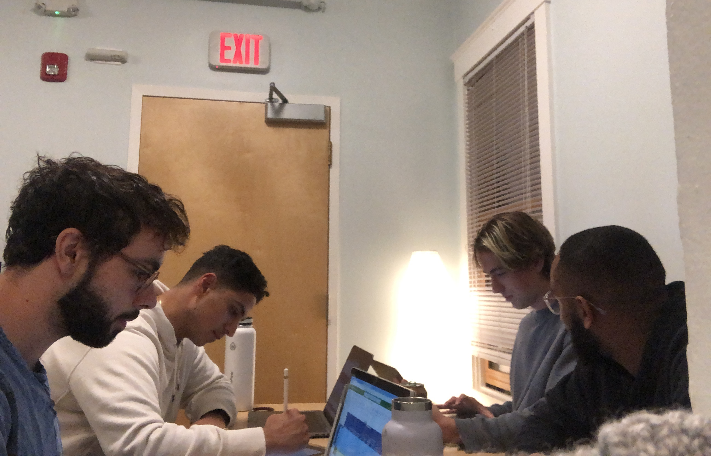
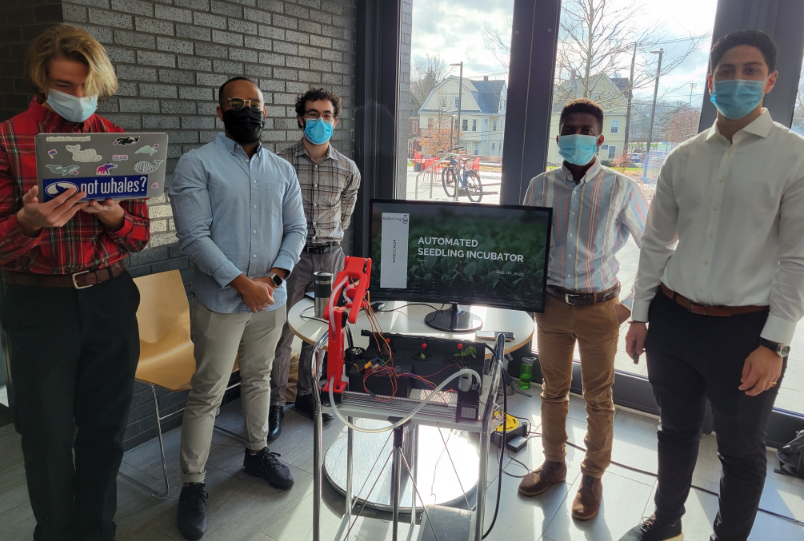

Introduction
All mechanical engineering students at Tufts are required to complete an intensive engineering design project in their final year. In September of 2021, I joined forces with a group of four other students on a project with the general intention of building some kind of robotic plant grower system. Our advisor for this project was the owner of midsize vegetable farm in northern New Hampshire named Tim.

Our Team
Skip to the Final Demonstration Video
Problem Definition
We began the design process through an interview with Tim, seeking to understand what factors were important to his success as a farmer and where he encountered challenges in his daily routine. Through a thorough analysis of our initial interview with Tim, we identified three key issues he experienced on his farm:
Producing crops throughout the year despite variable environmental conditions
Ex: Tim suffered a devastating loss of over half his lettuce crop due to disease during a wet spell in the previous year.
Coordinating crop harvesting with market demand for those vegetables
Ex: Methods that can increase vegetable shelf life such as better cooling and drying of harvested crops provide more flexibility in when crops can be planted and harvested.
Maximizing profit by considering the profit per square foot on the farm
Ex: Tim's farm avoids growing one and done crops like broccoli or cauliflower which take up space for long periods (~70 days) and then are worth only a small amount after being pulled from the ground.

Brainstorming a Problem Definition
Quality Function Deployment
After defining a set of problems, we began evaluating the needs of our stakeholders—farmers on small to midsize farms, like Tim—and prioritizing the relative importance of these needs. Using this list of needs, we sought to develop engineering requirements that we could include in our design that would meet these needs. A large part of this process was researching how already existing products met the needs we had identified to understand how they had translated those needs into their design and where they failed to appropriately address those needs. For example, one of the products we looked at was Farmbot—a CNC-type automated farming system. Although, fairly easy to use (user need: ease of use ✅), the immense size of the metal rig encompassing the planter box made this product impractical to move around on the farm and difficult to scale up (user needs: size and scalability ❌).
Identifying and Prioritizing Stakeholder Needs
Solution Set Convergence
With an understanding of the problem, the stakeholder, and existing solutions we began ideating potential solutions. We generated three sets of ideas—set-A, set-B, and set-C—each one progressively smaller and more detailed than the last. With our five set-C ideas, we each put together a 3D model of what one solution would look like in SolidWorks CAD. We presented these five designs to Tim to hear his feedback on what he found useful and exciting.

Set-C Solutions Before Sponsor Meeting
The set-C idea I had CADed up was a wheeled flag planting robot that would roam the farm with a soil moisture sensor and camera, placing flags wherever it noted the plants were struggling. The motivation behind this system was to catch at-risk plants early so that the farmer could restore them before lasting damage was done.
Flag Planting Robot Explanation
After meeting with Tim, we further reduced our solutions to just one final solution that we would fabricate. Although we would ideally have focused on the design that best met Tim's needs as he was our primary stakeholder, we also wanted to select a project for ourselves that would be sufficiently complex to challenge us intellectually and result in a product we were proud of completing.
Our final solution focused on the germination stage of crops, from seed to sapling. One of the things Tim had mentioned after hearing our ideas was how automated agricultural techniques were useful during germination where many plants could be raised in a controlled greenhouse environment to have a strong start before being taken outside and planted in the soil. We latched onto this idea of a germination focused automation system for our final solution and combined elements of the different ideas we had presented into a single product.

Selecting Final Solution After Sponsor Meeting
The automated seedling incubator idea we came up with included several components:
- A cart carrying everything so that the system could easily be moved around.
- Removable, compostable pots that could be placed directly into the soil when germination was complete.
- A robotic arm mounted on a linear guide rail that could move amongst the crops, monitoring them and planting seeds.
- A water reservoir and pump system that could provide water to the pots when needed.
First Prototype
With our solution planned out, we began collecting materials and assembling a first prototype. My teammates designed and 3D printed a storage system for the pots and irrigation tubing. I setup the linear guide rail with a stepper motor driver controlled by a raspberry pi to perform some simple movements back and forth demonstrating how a placeholder robotic arm (a piece of tubing we had found lying around and then duct-taped to the linear guide rail) would move to each pot. This first prototype helped us to solidify our vision of the final product and get us started down the fabrication path.

First Prototype
Second Prototype
In our next prototype, we constructed the robotic arm and began testing with the watering system. One of my teammates and I had taken on the task of constructing the robotic arm. The arm contains three servo motors in total. Two control the angles of the large joints to move the arm, while the last is used at the armtip to rotate the toolhead thereby switching out the engaged tool. I CADed the base piece mounting to the linear guide rail with a hole for the tubing and inline air filter to be used in our suction system for picking up seeds. Since I had stayed at school for Thanksgiving, I had the pleasure of having many 3D printers available to print these large parts. Afterwards, I removed the supports and began testing the interfaces such as the arm joints, servo motor mounting holes, and air filter hole. At this point, nearly all of the hardware was assembled and our focus going forward became programming the system using our raspberry pi microcontroller and testing to identify issues with the design.


Second Prototype
Final Prototype
In the next and final prototype, we assembled all the electronics and began testing individual functionalities of our system like picking up seeds at tip of the needle using the vacuum pump, testing the water pump, testing the robotic arm movements, and testing the soil sensor. I was responsible for linking the electronics to our raspberry pi and helped to write python classes for controlling the motors and pumps.
Labelled Electronics


Testing
Water Pump Testing
Seed Pickup Testing
Servo Motor Testing
Our final design included the following key features:

Soil Moisture Detection

Suction-based Seed Planting
3-DOF Plant Tending Robotic Arm

Modular System Design

Water Irrigation System
Presentation Day
After many rounds of testing to perfect the demonstration of the capabilities of our automated seedling incubator system, we presented our design to our classmates, professors, and sponsor. Unfortunately, Tim was unable to make it down for the presentation day in-person although he did join via zoom. It was difficult to share our project with him over zoom amongst many other groups in the crowded atrium, but we sent him a movie after demonstrating what we had built in greater clarity. Tim said he found our work inspiring and asked us to remember that food is the one choice we make multiple times daily that has a direct impact on our world in so many ways.
The Team
The Setup
Reflection
This project presented many technical challenges. There were three key technical issues that given more time for a future prototype, I would like to have addressed.
First, the suction system for picking up seeds was fairly inconsistent. It depended on the needle touching a seed in just the right orientation. If the seeds were smaller this likely wouldn't be as much of an issue, but I also saw online that similar suction-based seed retrieval systems would first agitate the bed of seeds before reaching in to grab one. I assume the agitation of the seeds increases the odds of a seed being in a successful position. We tried to imitate this by slapping the cart as the robot went to grab a seed. We had some success with this method, but it was difficult to get the seeds to agitate as much as I'd seen in the videos online.
Agitating Seed Bed
Second, the small servo motor used to rotate the toolhead at the tip of the robotic arm was under an immense amount of bending stress due to the way we routed the tubing used for the suction system. This caused the servo motor to make a terrible noise as it tried to move. After stalling for an extended period, the motor burned out during testing. We replaced the motor for presentation day, but continued to have the same issue. In the future, a hole for the air tubing could be included in the design of the robotic arm closer to the axis of rotation of the toolhead to prevent this issue.

Stress on Toolhead Servo
Third, the stepper motor driver controlling the stepper motor of the linear guide rail seemed to not be grounded correctly as the linear guide rail would start and stop abruptly every so often as it moved. Furthermore, by placing my hand near the stepper motor I could get the motor to start moving
Stepper Motor Magic
Beyond the many technical challenges, I also learned a number of other important skills. I practiced using engineering design tools like the Gantt Chart, House of Quality, and Decision Matrices. However, I can't say they were effective for our team. Maybe that's because we weren't using the tools correctly or maybe it's because the tools are designed for larger engineering projects with more team members and more tasks. I improved my communication skills as I shared the work I'd completed with my teammates, helped to delegate tasks amongst the team, and clarify our group's goals and expectations. Lastly, working on such a large-scale project reminded me how essential early testing is in an engineering project. We identified a number of issues in our final prototype the day before our presentation that if we had encountered earlier would have been easily solvable before the deadline.
Final Demonstration Video
The final demonstration video below combs together footage from all along the design process, from ideation to the final fabrication. It stands on its own in case you'd prefer to watch a movie instead of reading a bunch of text (the text has some unique insights not included in the video though).
Demo Video